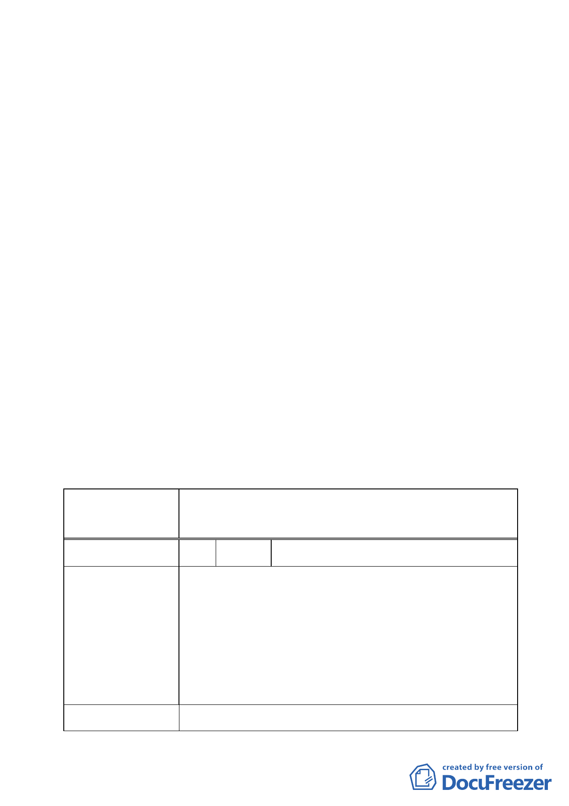

決議：
一、本案以變更為「文化特定專用區」方式辦理，區內規劃有「古
蹟保存」、「七海潭生態與景觀」、「圖書館及附屬行政服務設
施」等功能性細分區或用地。至於細分區及其地籍劃分、土
地使用管制項目與使用強度等內容，後續於擬定細部計畫時
再予規定。
二、有關市府及軍方協調保留軍方（海總）大門門面與文化特定
專用區、營區緩衝空間一節，除北安段 208、228、229-1 地
號等 3 筆土地毗鄰大門哨部分維持原都市計畫（行政區），其
餘 228、229-1 地號部分土地予以分割，變更為文化特定專用
區。
三、另同小段 288-2 地號土地漏植一節，請增列於計畫書中。
四、餘依本次會議市府建議版方案內容修正通過；併請依據前述
內容，配合修正計畫案名與書、圖。
五、公民或團體所提意見審決如綜理表。
臺北市都市計畫委員會公民或團體所提意見綜理表
案名
變更臺北市經國七海文化園區暨週邊地區主要計
畫案
編號
1 陳情人 財政部國有財產局臺灣北區辦事處
陳情理由
建議辦法
旨揭變更計畫範圍內涉本局經管臺北市中山區北安段四
小段 231-1 地號國有持分土地，經查該計畫書圖第 16 頁
第柒點、實施進度與經費，公有土地之管理機關缺漏登載
本局，爰請釐正計畫書圖等相關資料，以符實際。至有關
範圍內公有土地以無償撥用乙節，俟都市計畫變更完成
後，請市府文化局依「國有財產法」第 38 條、「各級政府
機關互相撥用公有不動產之有償與無償劃分原則」及「國
有不動產撥用要點」等相關規定辦理撥用。
同陳情理由。
- 15 -